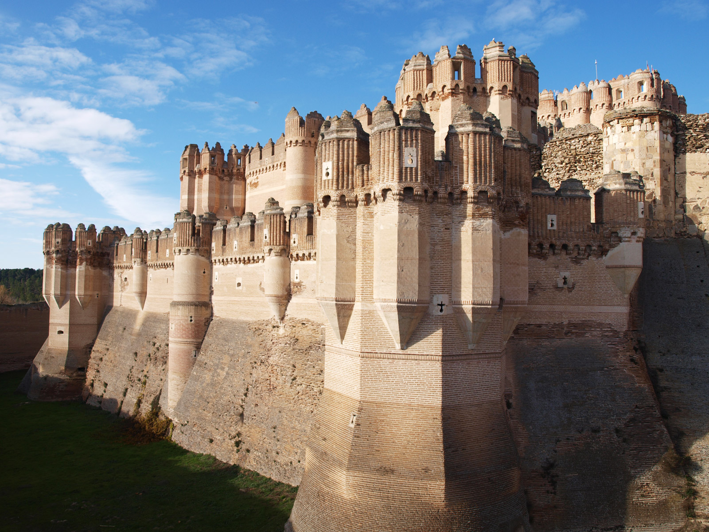

León
Localizacion
La ciudad de León está ubicada en una terraza fluvial en la confluencia de los ríos Bernesga y Torío, a una altitud de 840 m s. n. m.. Situada aproximadamente en el centro de la provincia, se encuentra en un lugar estratégico del noroeste peninsular, ya que es paso obligado para ir a Galicia y a Asturias.
Su término municipal limita al norte con Sariegos y con Villaquilambre, al este con Valdefresno, al sur con Santovenia de la Valdoncina, Onzonilla y Villaturiel, y al oeste con San Andrés del Rabanedo y Valverde de la Virgen. El territorio del término municipal está representado en la hoja 161 del Mapa Topográfico Nacional.

Imagenes obtenidas de esta web
{kind=link}
Localidades Principales
León
La Pulchra Leonina, la “Capilla Sixtina” del románico español y el antiguo Hospital de San Marcos son los puntos claves de este antiguo campamento romano.
El transcurrir del tiempo ha convertido a León en capital del reino en la Edad Media, en enclave histórico del Camino de Santiago y en una urbe a la medida de sus habitantes. El increíble paisaje natural de esta provincia nos llevará a conocer el Parque Nacional de Picos de Europa, el entorno de Las Médulas (Patrimonio de la Humanidad) y la estación invernal de San Isidro. Una oferta cultural y de ocio sólo superable por la calidad y variedad gastronómica leonesa.
La que fuera la Legio VII Gemina Pia Felix romana, mantiene un interesante legado románico, gótico y renacentista fruto de su esplendor durante la Edad Media. La Plaza Mayor configura el centro de esta ciudad, atravesada por el río Bernesga. En este conjunto barroco se alza el Ayuntamiento, llamado popularmente el “Balcón de la Ciudad”, ya que desde sus galerías los notables contemplaban las actividades ciudadanas que tenían lugar.
Por el “Húmedo”
Junto al consistorio nace el barrio de San Martín, en torno a la plaza y la iglesia de este mismo nombre. En esta zona se dan citan palacetes y casonas como la Casa de las Carnicerías y el Palacio del Conde Luna. La institución que distribuía la carne a la ciudad es un edificio del siglo XVII, que hoy alberga a una sala de exposiciones. El palacio conserva una portada del siglo XIV, gótica con influencias árabes, y un torreón almohadillado. También merece una visita la iglesia de San Salvador de Palat del Rey, data del siglo X y es la más antigua de la ciudad.
Por estas calles se encuentran diseminados bares y restaurante donde podemos degustar lo mejor de la gastronomía de la región, y que le ha hecho merecedor del sobrenombre de El Húmedo. Nuestro recorrido puede continuar en el Palacio de los Guzmanes y la Casa de los Botines. La fachada principal del palacio, sede de la Diputación Provincial, data del siglo XVI, y destacan en su construcción los balcones enrejados y la portada lateral. Por su parte, la Casa de los Botines es una obra del arquitecto Antonio Gaudí, que inauguró el estilo modernista en la ciudad. León cuenta con más ejemplos de esta corriente artística en la plaza de Santo Domingo.
Desde aquí, nos podemos adentrar en el área rodeada por las murallas de origen romano, en cuyos extremos se ubican dos de las joyas de la ciudad: la Catedral y la Basílica de San Isidoro. La “Pulcra Leonina”, uno de los templos góticos más impresionantes de España, se levanta sobre unas antiguas termas romanas y una iglesia románica. Su visión frontal nos ofrece, en su portada, uno de los más importantes conjuntos escultóricos góticos, un rosetón policromado y dos torres, curiosamente exentas de la fachada principal. Pero lo que quizá llama más la atención al visitante son los 1.800 metros cuadrados de vitrales. En su interior, debemos detenernos en el coro, los sepulcros románicos del crucero y en las capillas de la girola. La visita al Museo Catedralicio, uno de los más completos de su género, nos llevará a conocer el claustro y una escalera plateresca, además de importantes pinturas y esculturas.
Uno de los monumentos más significativos de toda Europa es la Basílica de San Isidoro. Sus anchos muros custodian celosamente lo que se conoce como la “Capilla Sixtina” del románico español. Se trata de frescos del siglo XII que decoran la cripta subterránea del Panteón Real y que aún conservan intacto su color original. Encontramos escenas del Antiguo y del Nuevo Testamento, motivos florales y un calendario de las faenas agrícolas. Pero la excepcional conservación y calidad de las pinturas no debe sustraernos de la contemplación de los elementos arquitectónicos. Las esculturas de las portadas y capitales son una auténtica Biblia en imágenes. En sus claustros se sitúa el museo, que conserva un archivo de códices, incunables y una Biblia visigótica, entre otras obras. Su prestigiosa colección de arte medieval se enriquece con el Arca de San Isidoro, la Arqueta de Marfiles o el Cáliz de Doña Urraca.
Recorriendo la ciudad descubriremos iglesias de todas las épocas y estilos. En San Marcelo se conserva un retablo realizado en parte por Gregorio Fernández, uno de los más relevantes escultores del Barroco español. Por su parte, un templo que recuerda el esplendor de la Ruta Jacobea a su paso por León es el de la Virgen del Camino, imagen muy venerada en la ciudad.
Camino de Santiago
Y también relacionado con el Camino de Santiago, Patrimonio de la Humanidad, se encuentra el Hostal de San Marcos. Uno de los más tempranos representantes del plateresco español fue hospital y albergue de peregrinos, y Casa Mayor de la Orden de Santiago. Actualmente alberga el Parador de Turismo de la ciudad, a orillas del río Bernesga. Un excepcional lugar donde alojarse durante nuestra estancia en la ciudad y sentarnos a una mesa bien provista de manjares de la tierra. El cocido maragato, las ancas de rana, las mollejas de ternera y las carnes de la montaña son sólo algunas de las sugerencias. Las legumbres, los productos de matanza y las piezas de pesca se riegan con vinos de la Denominación de Origen de El Bierzo. Arroz con leche o mantecadas de Astorga (elaboradas con azúcar, harina y huevo) ponen el punto final a cualquier degustación gastronómica.
La provincia de León nos depara importantes citas con la historia, el arte y la naturaleza de la región. El río Esla nos guiará para conocer los pueblos y monumentos que surgen en su ribera, como San Miguel de Escalada, monasterio de estilo mozárabe del siglo X. El extremo noreste de León está dominado por parte del Parque Nacional de Picos de Europa. Aldeas de montaña como Caín o Posada de Valdeón surgen entre valles, montañas y bosques de hayas. La garganta del Cares y el desfiladero de Los Beyos son algunos de los paisajes más impresionantes que podemos descubrir en plena Cordillera Cantábrica. Por su parte, en la montaña central de León se sitúa la estación invernal de San Isidro, en un paraje horadado por cientos de cuevas, entre las que destaca la de Valporquero. En sus galerías se han formado estalactitas, estalagmitas, lagos y cascadas.
Astorga, ciudad de origen romano, nos da la entrada a la comarca de la Maragatería. Entre sus pueblos encontramos uno es que Monumento Nacional, Castrillo de los Polvazares. El Camino de Santiago atraviesa León por la comarca de El Bierzo, concretamente por Villafranca del Bierzo, Cacabelos o Carracedo, cuyo monasterio de Santa María es Monumento Nacional. Cerca de aquí se yerguen las montañas arcillosas que componen Las Medulas, antiguas minas de oro romanas, que han sido declaradas Patrimonio de la Humanidad. Ya sólo nos queda viajar a Ponferrada y al Valle del Silencio. Uno de los pueblos del valle, Peñalba de Santiago, es Conjunto Histórico Artístico Nacional. Entre sus casas de pizarras y cuarcitas se erige la iglesia de Santiago, un templo mozárabe del siglo X.
Astorga
La capital de la comarca leonesa de la Maragatería ofrece un rico legado medieval, fruto de su ubicación en un cruce de caminos: el Camino de Santiago y la ruta Vía de la Plata.
Su recinto amurallado conserva iglesias, conventos y hospitales, que trasladan al viajero a la más pura tradición jacobea. Sobresale también en su trazado urbano una obra cumbre del arquitecto modernista Antonio Gaudí: el Palacio Episcopal. Astorga es, además, una buena oportunidad para disfrutar de la riqueza gastronómica de estas tierras.
Astorga aparece en la confluencia de dos importantes rutas españolas y, antaño, caminos de peregrinaciones. La más antigua de ellas, la ruta Vía de la Plata, remonta su origen a la época romana. Siguiendo este itinerario (Gijón-Sevilla) se transportaban los metales extraídos de las minas del norte peninsular a los puertos comerciales del sur. Durante la Edad Media fue recorrida por tropas árabes y cristianas, en tiempos de conquista y reconquista. Excelente vía de comunicación durante siglos, se convirtió en senda de peregrinación hasta Santiago de Compostela.
Hasta aquí conduce también el Camino de Santiago, ruta jacobea declarada Patrimonio de la Humanidad por la UNESCO. Formaba parte de un conjunto de sendas que recorrían Europa y el norte de España hasta Santiago de Compostela, ciudad santa por albergar el sepulcro del Apóstol Santiago. El casco histórico de esta localidad gallega es, asimismo, Patrimonio de la Humanidad.
Asturica Augustea
Y bajo el Imperio romano nace Astorga, la antigua Asturica Augustea . La mayoría de los hallazgos arqueológicos pertenecientes a este periodo históricose pueden visitar en la Ruta Romana. Un itinerario por interesantes restos romanos. Secciones de una basílica, termas, mansiones y parte del sistema de alcantarillado, son algunos de ellos.
La Puerta del Sol da entrada al recinto fortificado, en el que destaca la Catedral. La actual construcción comenzó a levantarse en el siglo XV, aunque los trabajos continuaron hasta el XVII. Así, su traza conserva tanto elementos góticos como renacentistas y barrocos, y obras de maestros de todos los tiempos. Los planos iniciales se deben a Gil de Hontañón, mientras que el Altar Mayor se encuentra firmado por Gaspar Becerra. La talla barroca de la Inmaculada es obra del genial escultor Gregorio Fernández, aunque también se conserva una escultura de la Virgen de la Antigua románica. Así mismo se puede admirar una arqueta de plata de Alfonso III el Magno de ejemplar factura. Otros importantes templos religiosos con yeserías barrocas son las iglesias de San Andrés, Santa Clara o San Bartolomé.
Antaño, a este conjunto de construcciones se sumaban hospitales de peregrinos. Hoy en día, el viajero se puede acercar a esta tradición de mano del Museo de las Peregrinaciones, alojado en el Palacio Episcopal. Se trata de un edificio neogótico obra del maestro modernista Antonio Gaudí. Otro notable monumento es el Ayuntamiento de la ciudad, barroco del siglo XVII. Esta obra de Manuel de la Lastra levanta su majestuosa fachada en la Plaza Mayor. Dos torres flanquean un hermoso balcón corrido de rejería y una espadaña sostenida con arbotantes. Colasa y Perico, los maragatos más populares de Astorga tocan las horas en una gran campaña de bronce.
El recorrido por esta localidad leonesa puede continuar en los Jardines de la Sinagoga, en el Parque del Aljibe, o en el Museo del Chocolate. Otra excelente opción es detenerse en alguno de los restaurantes de su casco urbano, para aproximarse a las recetas tradicionales de la comarca. La gran calidad de las legumbres leonesas se concreta en platos como el cocido maragato, que aquí se degusta en un orden inverso al tradicional. El comensal comenzará por la carne, chorizo y relleno, y terminará con los garbanzos, la berza y la sopa. La cecina (carne de vaca curada, secada y ahumada), el botillo (embutido de productos del cerdo cocido), la empanada berciana, el bacalao y las truchas son otras de las opciones más suculentas. Las manzanas reinetas, cerezas, peras, pimientos y castañas se incorporan en el recetario habitual de la región. Entre los postres, las mantecadas de Astorga son los más apreciados. Los vinos deben ser de la Denominación de Origen Bierzo.
Todo León
Desde Astorga se hace necesaria una visita a León, parada del Camino de Santiago y capital de la provincia. Las joyas principales de su arquitectura son la Catedral, la Basílica de San Isidoro y el Hospital de San Marcos (actual Parador de Turismo). La mejor muestra de la gastronomía leonesa habrá que buscarla en el barrio de El Húmedo, un entramado de calles donde las tapas (pequeñas raciones que acompañan a la bebida) servirán de adelanto a recetas más elaboradas.
Castrillo de los Polvazares, declarado Monumento Nacional, es una auténtica muestra de la cultura maragata. Calles empedradas conducen a recias casas de amplios portalones donde se respira la tradición leonesa. La cercana Sierra de Teleno posee un hábitat a orillas del río Duerna donde se dan cita ciervos y tejones, un lugar ideal para los amantes del medio natural. Excelentes enclaves para redescubrir oficios y usos antiguos son las poblaciones de Rabanal del Camino, Foncebadón o Quintanilla de Somoza.
Siguiendo la ruta jacobea alcanzamos Ponferrada y Villafranca del Bierzo. Es en Carracedo donde se levanta el monasterio de Santa María, declarado Monumento Nacional. Por su parte, Compludo nos ofrece la contemplación de una herrería medieval, mientras que Carucedo facilita la ascensión a Las Médulas. Estas montañas rojizas son antiguas minas de oro romanas, que han sido declaradas por la UNESCO Patrimonio de la Humanidad tanto por su valor paisajístico como histórico.
Las Médulas
La localidad de Las Médulas se sitúa en la comarca leonesa de El Bierzo. Este pequeño núcleo de montaña se convierte en la entrada natural para visitar Las Médulas, paisaje cultural único que ha sido declarado Patrimonio de la Humanidad por la UNESCO.
El perfil dentado de estas montañas de arcilla roja, y cubiertas de castaños, se debe a los romanos, quienes modelaron el entorno natural al establecer aquí una mina de oro a partir del siglo I d. C.
Para ello, idearon un ingenioso sistema denominado ruina montium, que aprovechaba la fuerza hidráulica para desmenuzar la tierra y dejar el oro al descubierto.
Los dos siglos que duró la explotación minera de la zona permitió configurar el peculiar relieve de Las Médulas. Cárcavas de arcilla roja, torres y galerías subterráneas, rodeadas de castaños componen este paisaje cultural. Picos de más de 100 metros de altura conducen al centro del yacimiento aurífero, la Cueva Encantada y la Cuevona.
A 8 kilómetros de Las Médulas, el Mirador de Orellán ofrece una de las mejores vistas de todo el conjunto.
Ya en la localidad de Las Médulas se puede conocer el material expositivo del Aula Arqueológica, que permite al visitante obtener todo tipo de información sobre la historia de este singular yacimiento romano.
La comarca del Bierzo, por la que pasa el Camino de Santiago, nos depara otras visitas de interés, entre ellas Villafranca del Bierzo, Cacabelos o el monasterio de Santa María de Carracedo.
Villafranca del Bierzo
Es la última localidad de importancia que atraviesa el Camino de Santiago por tierras leonesas. Su nutrido conjunto monumental y su carácter jacobeo la han convertido en importante centro turístico. Su casco antiguo está declarado Bien de Interés Cultural.
La plaza Mayor, el Ayuntamiento, la calle del Agua, el arco en el que desemboca y sus mansiones, entre las que sobresalen una morisca del siglo XV, el convento de las Agustinas Recoletas y otros palacios, forman el eje turístico.
A la entrada de la localidad se sitúa la iglesia románica de Santiago, que data del siglo XII. En uno de sus laterales se descubre la Puerta del Perdón, donde obtenían el jubileo los peregrinos que, por enfermedad, no podían continuar hasta Santiago de Compostela. Cerca de esta iglesia se localiza el Castillo-Palacio de los Marqueses de Villafranca. Aunque para contemplar residencias palaciegas nada mejor que dirigirse a la calle del Agua: entre escudos y blasones, aparecen algunos edificios emblemáticos de Villafranca del Bierzo como el Palacio de Torquemada, la Casa Morisca o la casa natal del escritor Gil y Carrasco. A la lista de monumentos para visitar también hay que añadir, entre otros, la colegiata gótica de Santa María, del gótico tardío y original de Gil de Hontañón, el convento barroco de San Nicolás el Real, los conventos de la Anunciada y de San José, fundados en el siglo XVII, o la Iglesia de San Francisco, que cuenta con un bello artesonado mudéjar. También merece una visita el museo de Ciencias Naturales.
Carucedo
Carucedo constituye el inicio de la ascensión a Las Médulas, un paisaje de rojas y quebradas montañas arcillosas que asoman entre la verde vegetación, declarado Patrimonio de la Humanidad por la UNESCO en 1997.
Las Médulas son obra de la ingeniería romana, que explotó la zona por sus ricos yacimientos auríferos, utilizando para ello un complejo sistema de canalizaciones que traía el agua desde los montes Aquilanos, a más de 15 kilómetros. Horadaban galerías –algunas se conservan-, las inundaban y esperaban a que el agua derrumbase la montaña, que caía desmenuzada hacia unos lavaderos –hoy lagos como Pozo Sumido o Lago Redondo-, donde se registraban los fragmentos en busca del oro. En total extrajeron unos doscientos cuarenta millones de metros cúbicos de tierra para el lavado de mineral y se calcula que obtuvieron 800.000 kilos de oro. Este procedimiento de extracción, unido a la vegetación y la erosión natural, consiguieron crear el impresionante paisaje actual.
Sahagún
A 67 kilómetros al sureste de León, se encuentra Sahagún, histórica ciudad que se extiende sobre un suave montículo y cuyo centro neurálgico es la plaza Mayor, que conserva su estructura de soportales.
En sus calles pueden contemplarse algunas casas de entramados de madera y ladrillo o con revocos de paja y barro. Entre su patrimonio artístico, herencia de su pujante pasado, destacan el monasterio de san Benito el Real, del que hoy sólo queda un arco neoclásico; las iglesias de San Tirso y de San Lorenzo, de estilo mudéjar de los siglos XII y XIII respectivamente; el convento de las Benedictinas, hoy museo de Sahagún; y el santuario de la Peregrina, en las afueras.
Ponferrada
Ponferrada, capital de la comarca del Bierzo, constituye una de las etapas principales del Camino de Santiago a su paso por la provincia de León. El casco histórico de esta localidad se extiende a los pies de un imponente castillo fundado por los templarios.
Ponferrada tiene sus primeros antecedentes en una antigua ciudadela de la época romana. A partir del siglo XI, el auge experimentado por las peregrinaciones a Santiago de Compostela permitiría el surgimiento del burgo de Pons Ferrata, situado en plena ruta jacobea y denominado así por la construcción de un puente reforzado con hierro.
En el año 1178, el rey leonés Fernando II puso bajo la custodia de la Orden del Temple este núcleo floreciente. Los templarios se sirvieron de la primitiva fortaleza romana para construir sobre ella un castillo en el que se establecieron y que, al tiempo, protegía el paso de los peregrinos. Este hecho favoreció el crecimiento demográfico y supuso el desarrollo comercial de la zona.
El Castillo
El Castillo se alza sobre el río Sil presidiendo el casco histórico de la ciudad. Esta fortaleza medieval, de planta poligonal, fue comenzada a construir hacia finales del siglo XII. A ella se accede por su lado sur a través de un puente levadizo sobre el foso. Mientras, la fachada principal está flanqueada por dos torreones unidos por un doble arco de medio punto. En torno a un gran patio interior aparecen diversas estancias, como el gran patio interior, la Sala de Armas o Las Caballerizas, sin olvidar su Torre del Homenaje y otras como las de Malpica, de Cabrera, Malvecino, etc.
A los pies del Castillo se extiende el casco antiguo de la ciudad, al que se entra por la Calle del Reloj. Es en esta vía donde se levanta la Torre del Reloj, construida bajo el reinado de Carlos I, en el siglo XVI, sobre una de las puertas del antiguo recinto amurallado.
Junto a la Torre del Reloj se sitúa el Convento de las Madres Concepcionistas. El edificio, de dos plantas, fue construido en mampostería por Francisco Samper a partir de 1565. Destaca de él su fachada, que alberga una hornacina con la imagen de la Purísima Concepción.
El final de esta calle conduce a la Plaza de la Encina, tradicional lugar de transacciones comerciales. En ella se levanta la Basílica de la Encina, uno de los edificios religiosos más destacados de la ciudad. El templo fue construido en estilo renacentista en 1573, mientras que su torre barroca es posterior, de 1614. En el interior, además de la talla de la Virgen de la Encina, pueden contemplarse algunos retablos, de entre los que sobresale el del altar Mayor, realizado por Mateo Flores en el siglo XVII.
En la parte baja del casco antiguo aparece el Hospital de la Reina, de estilo renacentista, y la iglesia barroca de San Andrés, que alberga un Cristo de los Templarios.
El Museo del Bierzo
Merece la pena acercarse hasta el Museo del Bierzo, ubicado en la Calle del Reloj, en el edificio de la antigua cárcel. Sus instalaciones permiten un acercamiento al legado histórico de Ponferrada y su comarca a través de objetos, herramientas y diversas obras de arte. La planta baja del museo, dedicada a los primitivos asentamientos desde el Paleolítico Inferior hasta el final de la época romana, exhibe una colección de utensilios de piedra, piezas de cerámica y otras piezas. Dentro de este periodo, destaca una sala dedicada a los castros, pequeños núcleos prerromanos que se instalaron profusamente por toda la zona.
De la Edad Media, el Museo conserva una valiosa colección de esculturas, pinturas y piezas de orfebrería. Los cambios socio-económicos experimentados en el Bierzo durante los últimos siglos, en especial el desarrollo de la industria minera, quedan igualmente reflejados en esta exposición. El recorrido por el recinto museístico finaliza en las salas que inciden en diferentes aspectos de la comarca, tales como el paisaje, la fauna o la flora.
En las afueras, Ponferrada conserva otra de sus joyas arquitectónicas. Se trata de la Iglesia de Santo Tomás de las Ollas, templo mozárabe construido en el siglo X, con planta rectangular y portada románica (s. XII). Destaca en su interior su Capilla Mayor, original conjunto formado por nueve arcos de herradura rematado en la parte superior por un polígono irregular de once lados.
Alrededores y gastronomía
Los alrededores de Ponferrada permiten conocer otros lugares de interés. Uno de ellos es el Monasterio de San Pedro de Montes, cuya construcción se remonta al siglo VII, si bien fue remodelado en varias ocasiones. Destaca la iglesia monacal, románica con posteriores añadidos dieciochescos. Posee planta basilical, con tres naves y conserva en su interior varios retablos e imágenes.
Varios kilómetros al sur se encuentra la iglesia de Santiago de Peñalba, perteneciente al monasterio que fundara San Genadio en el siglo IX. El templo, de estilo mozárabe, es de una sola nave con dos capillas anexas unidas por arcos de herradura.
Ponferrada se inscribe en plena ruta del Camino de Santiago, que cruza la provincia leonesa y atraviesa lugares como Hospital de Órbigo, Astorga, Cacabelos, el Monasterio de San Miguel de las Dueñas o Villafranca del Bierzo. En ésta última localidad existe la opción de alojarse en el Parador de Turismo.
La provincia de León cuenta en su territorio con uno de los principales atractivos naturales y turísticos de toda la Cordillera Cantábrica: el Parque Nacional de los Picos de Europa, espacio que se encuentra compartido con Asturias y Cantabria. La Ruta del Cares o el Naranco de Bulnes ofrecen algunos de los paisajes más espectaculares de los Picos de Europa.
Las Médulas, declaradas Patrimonio de la Humanidad, constituyen un singular paisaje de tierra rojiza que recuerda la extracción de oro llevada a cabo en la zona por los romanos a partir del siglo I a. C.
Como capital del Bierzo, Ponferrada se convierte en un magnífico escaparate de las principales recetas de la comarca. Destaca el botillo, embutido de cerdo adobado y ahumado que se sirve acompañado de cachelos (patatas cocidas) y verduras. Este plato debe ser regado con los vinos del Bierzo, que cuentan con Denominación de Origen propia.
Geografia
Orografía
Situado en la transición del Páramo Leonés a la cordillera Cantábrica, su ubicación en la confluencia de dos ríos hace que la capital leonesa se asiente en una zona predominantemente llana, si bien según se aleja del núcleo urbano el terreno se eleva, encontrándose por el norte con el Monte de San Isidro y por el este con los altos en los que se encuentra Golpejar de la Sobarriba.22 En el término municipal se encuentran los vértices geodésicos de Valenciano, a una altitud de 938 m s. n. m., y de San Isidro, a una altitud de 939 metros.23 En centro de la ciudad se encuentra a una altitud de 837 metros,2 mientras que la altitud del municipio varía desde los 800 metros en el último tramo en la localidad del río Bernesga hasta los 944 metros en el norte del municipio.3
Hidrografía
León está bañada por los ríos Bernesga, que recorre la ciudad por el oeste, y el Torío, que la delimita por el este, situándose la mayor parte del núcleo urbano entre los dos cauces. A su paso por la ciudad, se encuentran canalizados y adecuados para el paseante, con jardines y paseos peatonales. La confluencia de ambos se sitúa a la altura del polígono de La Lastra, donde el Torío vierte sus aguas en el Bernesga.
Sobre el río, y en el centro de la ciudad, se encuentra el Aula de Interpretación de las Energías Renovables de León, perteneciente al Ayuntamiento de León. Es un aula destinada a enseñar a sus visitantes las soluciones complementarias y alternativas que proporcionan las energías renovables al sistema energético actual,24 pretendiendo ser un referente en ese aspecto en la comunidad autónoma de Castilla y León.
Se trata de un edificio situado en los márgenes del río Bernesga junto al Puente de los Leones, construido tras un acuerdo alcanzado por el EREN y el Ayuntamiento de León. El Aula posee un espacio de exposiciones sobre el medio ambiente y cuenta con una instalación solar térmica, una instalación solar fotovoltaica y una minicentral hidroeléctrica.24 La electricidad generada por estas tres últimas se incorpora a la red eléctrica general para su posterior utilización, siendo capaz de dar luz a 1100 familias.25
Clima
El clima de León es oceánico mediterráneo de tipo Csb de acuerdo a la clasificación climática de Köppen.
Las precipitaciones están repartidas, como es habitual en los climas mediterráneos, de forma muy irregular a lo largo del año, con mínimos en la época estival y máximos durante primavera y otoño. La precipitación media anual es de 556 mm. La ciudad disfruta al año de 2624 horas de sol al año y de 78 de lluvia, además de 16 de tormenta.26
Las temperaturas son frescas, con una media anual de 11,1 °C según los datos de la estación meteorológica de La Virgen del Camino, con inviernos fríos, siendo frecuentes las heladas (74 días de helada de media al año).26 La nieve hace acto de presencia en la capital leonesa durante 16 días de media al año, si bien las grandes nevadas no son frecuentes salvo en fechas como diciembre de 2009, cuando la ciudad y parte de la provincia se colapsaron debido a un temporal de frío y nieve durante el cual se registraron temperaturas mínimas históricas en algunos lugares y obligó a la UME a intervenir para hacer frente a las complicaciones derivadas del mismo.2728 El verano es caluroso, suavizado por la altitud de la ciudad, con temperaturas máximas que rondan los 27 °C.26
A continuación se muestran los datos del observatorio meteorológico de la AEMET situado en el Aeropuerto de León a 916 m s. n. m., en el municipio de Valverde de la Virgen muy cerca de la ciudad de León. El periodo de referencia es 1981-2010 también para las extremas.
.jpg)
Imagenes obtenidas de esta web
{kind=link}
Historia
Fundación y época romana
La ciudad de León surge hacia 29 a. C. como campamento militar romano de la Legio VI Victrix, en la terraza fluvial entre los ríos Bernesga y Torío, cerca de la ciudad astur de Lancia, con motivo de las llamadas guerras cántabras.31 A finales del siglo i, a partir de 74, el campamento es ocupado por la Legio VII Gemina, fundada por Galba, la cual permanecerá en León hasta aproximadamente principios del siglo v. Fue la única legión asentada en Hispania hasta la caída del Imperio Romano de Occidente (476), por lo que durante todo este tiempo León fue la capital militar de la Península. La ciudad perteneció al Convento Asturicense, con capital en Asturica Augusta, el cual formó parte de la provincia Tarraconense hasta el siglo iii, cuando, con la creación de la provincia de Gallaecia, fue integrado en ésta.
El trazado campamental romano original aún puede observarse en la actualidad, puesto que se conservan gran parte de las murallas que lo rodeaban en los siglos iii y iv. Alrededor de las murallas que delimitaban el campamento fue creándose un núcleo civil paralelo, la cannaba, en la que se asentaban todas las personas que se encargaban de cubrir las necesidades de los soldados. Por los restos arqueológicos se sabe que contaba con unas termas32 (con ruinas aún visibles bajo la catedral) e incluso un anfiteatro con capacidad para 5000 espectadores a extramuros, actualmente enterrado bajo la calle Cascalerías.
Épocas sueva, visigoda y musulmana
Tras el período romano, la ciudad formó parte del Reino suevo y posteriormente, tras su conquista, del Reino visigodo. Entre los siglos vi y viii la escasez de evidencias arqueológicas proyectan una imagen carente de vitalidad urbana, con una clara reducción del espacio habitado, aunque el descubrimiento de cerámicas pertenecientes al periodo omeya cordobés cerca de Puerta Obispo nos indica que la ciudad no fue abandonada completamente, sino que conservó cierta población estable. La ciudad fue conquistada, durante la invasión musulmana de la península, en el año 712, siendo recuperada en el 754 por Alfonso I aunque debido a su condición fronteriza se mantendría deshabitada durante casi un siglo.
Tendremos que esperar hasta el año 846 cuando un grupo de mozárabes intentó repoblar la ciudad, que pese haber permanecido despoblada al estar en el centro de la línea de combate entre cristianos y musulmanes aún conservaba sus murallas romanas. El intento fue frustrado por un ataque omeya que mantendría la ciudad despoblada hasta el año 853 en el que Ordoño I incorpora de forma efectiva la ciudad al Reino de Asturias, repoblándola con éxito.33 Sería finalmente con Ordoño II, que ocupó el trono (914 - 924) tras la muerte de su hermano García I, cuando la ciudad se convierte en capital del reino astur, iniciando el Reino de León.
Repoblación y capitalidad
La ciudad de León fue sede regia desde la fundación del reino, con García I, a principios del siglo x, hasta la integración en la Corona de Castilla en 1230, momento en que la capitalidad del reino unificado fue itinerante y debido a ello León fue creciendo y evolucionando en su desarrollo. En esta cuestión jugó un destacado papel el Camino de Santiago, quizás la más importante vía de circulación de gentes, ideas, cultura y arte del Medievo. En el siglo x destacarían reyes como Ordoño II, que fijó la capitalidad y consagró la primera catedral en las antiguas termas romanas, donde hoy se encuentra la catedral gótica, y su hijo Ramiro II, que construyó el primer palacio en Palat de Rey y, al igual que su padre, llevó a cabo exitosas campañas contra los musulmanes. La segunda mitad del siglo es de luchas civiles en León, reyes débiles con problemas con la nobleza, y de ataques y contraataques musulmanes a la ciudad, incluyendo uno de Almanzor, que causó graves daños. La recuperación y reordenamiento de la capital llegó con Alfonso V a inicios del siglo xi, así como el comienzo de la victoria cristiana en la península. Avanzado el siglo, hay un cambio de dinastía, destacando a Fernando I como rey iniciador de la basílica de San Isidoro, construida con motivo del traslado de los restos de San Isidoro a la ciudad y del panteón real del reino. Su sucesor Alfonso VI que pasó a los anales de historia por el avance en la reconquista con la conquista de Toledo y, sobre todo, por su relación política con el Cid, fue cuyo reinado presenció la consagración de la nueva catedral románica iniciada por Urraca en 1073, donde presumiblemente trabajarían los mismos canteros que en la basílica.
En el siglo xii, y tras el paso de la primera reina, Urraca I, destaca su hijo Alfonso VII, que avanzó notablemente la reconquista y llegó a coronarse emperador de toda Hispania en la antigua catedral leonesa. Es en este siglo cuando el geógrafo y viajero árabe Edrisi escribió lo siguiente sobre León: «Allí se practica un comercio muy provechoso. Sus habitantes son ahorradores y prudentes». Tenemos también noticia de León a través de diversos códices, entre ellos el Codex Calixtinus, manuscrito que, entre otras cosas, contiene información sobre la ruta que los peregrinos seguían hacia Santiago de Compostela. Con todo ello, la ciudad conoció el desarrollo de nuevos barrios, en ocasiones extramuros de una ciudad que ya se quedaba pequeña, y casi siempre a la vera del camino de los peregrinos, que accedían a la ciudad por la llamada Puerta Moneda.
Tras la muerte de Alfonso VII, este dividió los reinos de León y Castilla entre sus hijos; Fernando II reinó en León, destacando la reconquista de Extremadura. Su sucesor y último rey privativo de León fue Alfonso IX, que convocó las primeras cortes de Europa, con participación de todos los estamentos sociales, en la basílica de San Isidoro en 1188. Será en 1230, cuando tras su muerte la corona leonesa y la castellana recaen sobre la cabeza del monarca Fernando III el Santo, algo que supondría para León la pérdida de la capitalidad fija, pues esta se vuelve itinerante.34 No supondría no obstante el fin de la prosperidad de la ciudad, que durante todo el siglo xiii mantuvo un gran empuje comercial y crecimiento demográfico. Es en esta época cuando a mediados de siglo, Alfonso X el Sabio ordenó el derribo de la vieja catedral y la construcción de la actual, de estilo gótico.
Corona de Castilla
Tras la integración del reino leonés en la Corona de Castilla pese a la pérdida de relevancia política la ciudad se mantuvo prospera y es durante el siglo xiii cuando la catedral de León se construiría, reiniciando su construcción por orden de Alfonso X en 1255 finalizando en 1302 la totalidad del templo. Durante el siglo xiv, León experimentó una crisis económica que vino acentuada por una serie de acontecimientos climáticos en toda Europa que mermaron las cosechas, produciendo hambrunas y endeudamiento de los campesinos. Estas circunstancias fueron agravadas con la llegada de la peste a León entre 1349 y 1350,35 la cual provocó una gran mortandad en la zona, despoblando pueblos y mermando, según fuentes de la época, en más de un cuarto la población de la zona. A esta serie de fatalidades se le unieron una inestabilidad política en toda la Corona castellana que produjo continuas tensiones que a menudo desembocaron en conflictos armados.
Con la llegada del siglo xv, las cosas comenzaron a mejorar, observándose un incremento notable en la población en la edificación de nuevas casas, reconstrucción de las anteriores y ensanche de los arrabales. Se hablaba en estos años de hacer una cerca que comprendiese el arrabal de la parte oriental de la ciudad, abarcando las iglesias de San Lorenzo, San Pedro de los Huertos y San Salvador del Nido de la Cigüeña. Así, la ciudad de León, a finales de siglo, contaba con una población entre los cuatro y cinco mil habitantes mientras que ciudades vecinas como Salamanca y Burgos tienen quince mil y diez mil habitantes.36
Guerra de las comunidades
En el siglo xvi, la Guerra de las Comunidades contra Carlos I en León destacó por un insólito fervor comunero en el cabildo catedralicio y en los barrios extramuros. En la órbita local, las dos familias dominantes de aquella época, los Guzmanes, por parte de los comuneros, y los Quiñones, por parte del rey, hicieron de la guerra la excusa perfecta para resolver sus diferencias.37
Decadencia
En estos siglos, León vive un estancamiento de su población, algo normal en las ciudades del interior. El leve incremento poblacional en la ciudad no se debe a un incremento de la actividad industrial o comercial, sino al empuje de la agricultura de las zonas rurales que rodean la ciudad. Prueba de la decadencia comercial e industrial de la ciudad es lo acontecido con las fábricas de hilados. En 1749, bajo los auspicios del secretario de Estado, José de Carvajal y Lancaster, se levanta un edificio en el llamado Campo de San Francisco para ampliar la fábrica de hilaturas que ya funcionaba en la calle de la Rúa, pero en 1769 esta fábrica ya había dejado de funcionar. El empeño puesto por el secretario de Estado contó con la oposición de las autoridades locales. Según Real Orden de 24 de enero de 1786, a instancias del obispo Cuadrillero, se crea en este edificio un hospicio, cuya obra se completa en 1793. También hubo intentos, con la ilustración, de modernizar la ciudad y sanearla con la construcción de nuevas fuentes y equipamiento público, así como con la creación de una de las Sociedades Económicas de Amigos del País en la ciudad.38
La ciudad de León, con 5500 habitantes (aunque algunos viajeros, como el reverendo J. Townsend, aumenten la cifra a 6170 almas) era, junto con Zamora, una de las ciudades menos pobladas de la región y de la meseta. Las malas condiciones higiénicas y el hacinamiento contrarrestaban el avituallamiento regular y asegurado por los municipios en épocas de crisis. Además, en épocas de malas cosechas, atraían a mendigos, vagabundos y marginados de los amplios alrededores que, agrupados en las puertas de conventos y obispados, esperaban unas relativas garantías de no morir de hambre, introduciendo en la ciudad epidemias que aumentaban la tasa de mortalidad.
Era industrial e independencia
En los días previos al estallido de la Guerra de la Independencia, en concreto el 24 de abril de 1808, tuvo lugar en León, al mismo tiempo que una serie de incidentes acaecidos en otras ciudades españolas como Burgos, Toledo o Madrid, una manifestación popular en favor de Fernando VII ante el miedo de que Carlos IV, el cual contaba con el favor de los franceses, volviera a reinar, suponiendo, por tanto, un rechazo a Napoleón.39 4041 El 26 de julio de ese mismo año la ciudad caería ante el general galo Jean-Baptiste Bessières. Retomado su dominio en junio de 1812, solo volvió a manos francesas durante un breve período en 1813, pero acto seguido los franceses se replegaron totalmente, volviendo la ciudad a la normalidad.
En 1833 la ciudad adquirió el rango de capital de su provincia, la cual formaría parte, junto a Zamora y Salamanca, de la Región de León.4243 Entre finales de siglo y principios del xx, el desarrollo de la minería del carbón la convirtió en nudo comercial y de comunicaciones fundamental en todo el noroeste, con el desarrollo de diversas infraestructuras, entre las que destacan la construcción de su estación de ferrocarril (luego propiedad de Renfe y hoy, de Adif) para vías de Ancho Ibérico, y el trazado de una línea de Ferrocarril de vía estrecha, conocida como El hullero, que, desde León, conectaba las principales zonas de extracción carbonífera con el núcleo industrial de Bilbao.44
En León, antes de la desamortización promovida por Juan Álvarez Mendizábal, gran parte de las tierras circundantes pertenecían a la iglesia, por lo que la ciudad tenía constreñido su crecimiento y carecía de una red vial adecuada, ya que las infraestructuras existentes se encontraban anticuadas, insuficientes para satisfacer las necesidades del nuevo y creciente tráfico rodado. Con la desamortización, las nuevas tierras desamortizadas quedaban libres para el desarrollo urbanístico, marcando un antes y un después en el desarrollo urbano de la ciudad que comenzó a superar su casco medieval. El ensanche, que es una forma de ordenar el espacio entre la ciudad y la nueva estación de tren, así como otros barrios de extrarradio, surgieron en las tierras eclesiásticas ahora libres. De todas las propiedades expropiadas, la que más destaca, es San Marcos, el cual fue vendido a la diputación por 985 700 reales, precio en el que había sido tasado.
Expansión urbana y ensanche
En 1863 llega el ferrocarril a la ciudad, ubicándose la nueva estación en la margen derecha del río. Son las instalaciones de la estación las que se convertirán en el principal factor dinamizador del crecimiento urbano leonés durante la segunda mitad del siglo xix y primeras décadas del siglo xx. La estación constituía un núcleo de fijación y expansión constituida por sus propias instalaciones, conectadas mediante otras obras públicas y accesos a la ciudad. La situación de la estación, en la margen derecha del río Bernesga, y al oeste de la ciudad vieja, fue determinante para el desarrollo urbano de los siguientes años, ya que la ciudad se expandió prioritariamente hacia esa zona. En los alrededores de la propia estación comenzaron a instalarse industrias interesadas, empezando a aparecer las primeras agrupaciones de población obrera que trabajaba en el ferrocarril, formando así el barrio de la Estación en torno a la misma.
A medida que avanzaba el siglo xix, la vieja ciudad medieval se revelaba como un marco vital cada vez más inadecuado para satisfacer las necesidades de la población. La ocupación del espacio era más densa y en la misma proporción crecían las necesidades de vivienda, a la vez que la movilidad comercial aparecía colapsada por una estructura vial construida siglos atrás. La ausencia o ineficacia de sistemas de evacuación de todo tipo de residuos, junto a la no existencia de una reglamentación estricta en materia higiénico-sanitaria, propiciaba un medio ambiente insano, responsable de las grandes plagas que atacaron a la población española a lo largo del siglo xx.
El ensanche
La situación del nuevo foco de desarrollo en torno a la estación potencia la unión de la plaza de Santo Domingo y del recinto amurallado con esta zona; tomando desde entonces ya cierta importancia Ordoño II, entonces Paseo de las Negrillas, importancia que se confirma con la construcción de un nuevo puente de hierro sobre el Bernesga en 1871. Este cambio en la situación urbana de la ciudad induce al ayuntamiento a dar contenido teórico al ensanche, siendo el jefe municipal de obras públicas, José Manuel Ruiz de Salazar, quién define los elementos urbanísticos que ha de contener el nuevo barrio de la ciudad. Este primer estudio ya define algunos elementos característicos que se han conservado en la actualidad, tales como el carácter vertebrador de Ordoño II en la nueva trama urbana. Así mismo, también recoge la creación de un pulmón verde, el Paseo de Invierno, que conecta el jardín de San Francisco con el Bernesga, que tiene su equivalencia actualmente en la avenida Lancia de la capital leonesa.
Dada la escasa viabilidad del estudio de 1889, el ayuntamiento convoca un concurso siete años más tarde que englobaba los terrenos del anterior estudio menos los pertenecientes al monasterio de San Claudio, quedándose la actuación en 55 hectáreas. Las expectativas de crecimiento que justificaban el ensanche se basaban en el crecimiento ferroviario, la centralidad adoptada por la ciudad en los importantes negocios mineros leoneses y en las expectativas militares de la ciudad, donde se sopesaba la creación de una capitanía general. El único trabajo que se presenta recoge todos los elementos esenciales en la trama viaria que el ayuntamiento de León exigía en el concurso. Así, el proyecto recoge como centros de referencia las plazas de Santo Domingo, centro geométrico tras la expansión de la ciudad con el ensanche, la plaza de Guzmán el bueno, centro de distribución del tráfico entre la ciudad nueva y la vieja y la plaza de San Marcos, donde se buscaba conectar la ciudad vieja con el antiguo convento, ya por entonces declarado monumento nacional. Por todo ello, el proyecto original planteaba la Gran Vía de San Marcos como principal eje viario, siguiendo los preceptos del ensanche de Barcelona. El trazado de manzanas cuadriculadas, de una importante extensión, marcó el trazado de esta vía y una vía diagonal, Ordoño II, se ordenó con un sistema de manzanas triangulares. El proyecto se vino abajo de inmediato, con una serie de modificaciones que no permitieron su aprobación hasta 1935.
La falta de recursos impidió al ayuntamiento a acudir a la expropiación como vía para adquirir los terrenos, por lo que únicamente tuvo que negociar directamente con los propietarios, que forzaran la inclusión de modificaciones en el proyecto. Estas modificaciones suponen la apertura de nuevas calles secundarias perpendiculares a Ordoño II, que en sustitución de Gran via se convertiría en la principal vía del nuevo barrio, así como la apertura de nuevas calles principales no contempladas en el proyecto inicial como Burgo Nuevo y Fajeros. El desarrollo del ensanche fue lento por la normativa municipal que prohibía la implantación de industrias y viviendas obreras, que se verían también ahuyentadas del sector por un coste del terreno que hacía inasumible la inversión por lo que el desarrollo se realizaría en función de la demanda de la clase acomodada de la ciudad.
Segunda República y Guerra Civil
Tras la sublevación de julio de 1936, que dio lugar al inicio de la Guerra Civil, la mayor parte de la provincia quedó en manos de los sublevados. En León, la sublevación de la guarnición tuvo lugar el 20 de julio, una vez que la columna minera, que desde Asturias se dirigía a Madrid, hubo dejado la ciudad. Las tropas sublevadas, con el general Carlos Bosch y Bosch como gobernador militar, el coronel Julián Rubio López en el aeródromo de la Virgen del Camino, y los guardias civiles y de asalto que había en la provincia, controlaban la zona, contando pronto con la ayuda de tropas venidas de Galicia, al mando del comandante López Pita.
La resistencia fue escasa y los cargos públicos del Frente Popular, entre ellos el alcalde Miguel Castaño, fueron arrestados, condenados a muerte y ejecutados por fusilamiento.45
Los republicanos, por su parte, establecieron en León cuatro comandancias: las de Belmonte, Puerto Ventana, Pola de Gordón y Cangas de Onís. El Comité provincial de milicias antifranquistas, al igual que el resto de comités del Consejo Provincial del Frente Popular, se diluyó en Consejo Provincial del Frente Popular y luego en el Consejo Interprovincial de Asturias y León. En 1937, los republicanos intentaron sus últimos ataques, pero desde el mes de septiembre, la ofensiva franquista se generalizó, recuperando los puertos de montaña y dando fin a la guerra en el norte el 21 de octubre de 1937.
Dictadura franquista
Tras el impás de la guerra, la ciudad continúo creciendo con normalidad, recibiendo oleadas de inmigrantes, en su mayoría obreros o empleados de baja cualificación en busca de empleo en la industria y los servicios. El problema fue inmediato ya que, si bien la ciudad ofrecía puestos de trabajo para atraer a inmigrantes, la falta de vivienda distaba de satisfacer las necesidades de estos nuevos inquilinos. Se daban además dos características: el Casco Antiguo estaba saturado y aún con un uso intensivo de las viviendas, donde era imposible alojar a tanta gente, y por otra parte, el Ensanche, donde debido a las normas municipales, estaba prohibido edificar casas de obreros. La solución a estos problemas fue la de iniciar la construcción de barrios obreros a las afueras, iniciando así la expansión suburbial de la ciudad. Comienzan así las llamadas parcelaciones particulares, en las que el propietario de una finca la parcelaba, vendiéndola después con gran beneficio económico. El Ayuntamiento, por tolerancia o por incapacidad, fue dejando que se urbanizaran estos nuevos barrios sin los requisitos mínimos de infraestructuras como agua, electricidad o el acceso a la sanidad y la educación, creándose así urbanizaciones de ínfima calidad, que sólo pudieron ser mejoradas con el concurso municipal para dotarlas de servicios año más tarde. De esa manera, al norte surgen barrios como San Esteban, San Mamés, Mariano Andrés, Las Ventas y La Inmaculada.
Plan General de 1960
A mediados de los años 50 se inician en León los proyectos para elaborar un Plan General de Ordenación Urbana, aprobándose definitivamente en 1960. Todas las actuaciones urbanísticas en la ciudad y en el municipio quedaban, por tanto, sujetas a los criterios, métodos y disciplina sancionados legalmente.
En los años 60, las ciudades españolas, y León no era una excepción, experimentan importantes crecimientos. La localización de la industria y los servicios, las demandas del éxodo rural, la construcción de viviendas y la especulación sin límites otorgaban al crecimiento urbano las características de gran negocio. En estas condiciones, y ante perspectivas inmobiliarias tan prometedoras, la Ley del Suelo queda convertida en un estrecho marco de legalidad urbanística que no hace otra cosa que entorpecer el libre juego de las fuerzas económicas de la ciudad. Consecuentemente, los Planes de Ordenación no se cumplen, siendo más grave aún la imposibilidad de que movimientos socio-políticos organizados puedan denunciarlo y reivindicarlo. Particularmente, se incumplen aquellas partes del Plan dedicadas a la previsión y provisión de espacios para equipamientos y servicios sociales, culturales y recreativos; por supuesto, las zonas verdes no constituyen ningún tipo de prioridad.
Es gracias a este plan que se terminan los grandes barrios periféricos de la ciudad, algunos de ellos iniciados en los años 20. La incontenible especulación de estos años certificó su presencia en la ciudad con el proyecto de la gran avenida que atravesaría el continuo urbano, engullendo el caserío existente desde Santa Ana, al sur, hasta la carretera de Asturias, al norte. Los tramos que se lograron construir (Avenida Reino de León) muestran la naturaleza de la operación; aparentemente el objetivo era crear una vía de tráfico fluido pero a mayor anchura de la vía, mayor altura de los edificios, mayor número de plantas y, por tanto, más metros cuadrados a la venta.
Transición y Democracia
En 1979 se celebraron de nuevo elecciones democráticas en la ciudad de León, en las que se hizo con el triunfo el PSOE por un error de conteo de los votos,46 siendo finalmente el verdadero ganador el UCD, con Juan Morano a la cabeza, que gobernó hasta 1987. En este año se produjo el Pacto Cívico,47 impulsado por José Luis Díez Villarig, por el cual sacó del gobierno a Juan Morano durante dos años, tras los cuales volvería al gobierno municipal por el PP, gobernando hasta 1995.48 Le sucedió en ese año Mario Amilivia, que gobernó ocho años, hasta 2003, logrando en su primer mandato, el del 1995, la primera y única mayoría absoluta que ha existido en el Ayuntamiento de León hasta las elecciones municipales de mayo de 2011.49
Paralelo al desarrollo de estos actos, renació el leonesismo, movimiento cultural del siglo xix recuperado para la reivindicación política, produciéndose la aprobación de mociones en favor de una autonomía leonesa por parte de municipios y la Diputación Provincial de León en 1983, así como manifestaciones en favor de la autonomía leonesa, con 20 000 personas en 1983 y 90 000 en 1984.50
En 1979 se crea la Universidad de León a partir de la escuela universitaria de Veterinaria perteneciente a Oviedo en el paraje de Vegazana. Es de esta época también cuando se construyen multitud de parques como el Quevedo, la Granja o el parque de los Reyes y se realiza la ampliación del caserío con la edificación de nuevos barrios como Eras de Renueva, Pinilla, el Polígono X o La Torre que permitían alojar a la entonces creciente población leonesa. Paralelamente y a finales de los 70 también la construcción del polígono de Onzonilla, supuso el primer intento de la ciudad de dotar de un espacio acotado para las actividades industriales que hasta ese momento se desarrollaban sin orden siguiendo las vías de comunicación. Las infraestructuras de la ciudad también fueron actualizadas, con la inauguración del aeropuerto y de la ronda este. Antes del cambio de siglo, en 1997, la calle ancha fue peatonalizada, iniciando el proceso de peatonalización del casco histórico. Parejo a estos desarrollos, los pueblos pertenecientes al Área metropolitana de León comenzaron a crecer, quienes con nuevos planes urbanísticos determinaron un gran área de desarrollo urbano entre Villadangos del Páramo y Mansilla de las Mulas.
Siglo XXI
Con el cambio de siglo, León creció de forma acelerada con nuevos barrios que ampliaron aún más el espacio urbano. La Lastra por el sur colmató el espacio que había entre los ríos Bernesga y Torío mientras que al norte nuevos barrios y ampliación de otros como Universidad y Palomera permitieron ir rellenando el espacio entre el casco urbano y la ronda este. Los pueblos del alfoz, que ya habían comenzado a desarrollarse en el siglo xx crecen con más ímpetu alcanzando San Andrés los 30 000 habitantes, Villaquilambre los 15 000 y Valverde y Sariegos los 5000 habitantes. El proceso constructivo se para con la llegada de la crisis inmobiliaria frenando la integración efectiva de estos nuevos barrios a la ciudad y dejando abandonadas múltiples promociones en el alfoz. Recientemente no obstante, en 2019, se ha iniciado la construcción por primera vez desde dicha crisis de un nuevo barrio en la ciudad, en las inmediaciones del parque de la Granja, retomando de nuevo la expansión urbana de la ciudad.
Si bien León no es una ciudad centrada en la industria, el espacio dedicado a la misma se ha ido ampliando, primero como un esfuerzo de ordenar las actividades industriales ya existentes en espacios preparados para ellas y después para permitir la expansión de las mismas. Así surge la ampliación del polígono industrial de Onzonilla y nace el parque tecnológico mientras que en el alfoz paralelamente se desarrollan los polígonos de Villaquilambre, San Andrés y Villadangos con proyectos para desarrollar nuevos espacios también en la localidad de Torneros. La expansión de la actividad industrial se centra en los sectores farmacéutico y logístico principalmente, con múltiples empresas biotecnológicas que siguen la tradición empresarial de Antibióticos y grandes grupos de distribución como Inditex, Mercadona o Decathlon.
El desarrollo de nuevas infraestructuras que vive el país con el cambio de siglo no es ajeno a León, donde se construyen autovías hacia Astorga, Benavente y Valladolid mientras que se construyen la ronda sur y el Acceso Sur a León. El aeropuerto también vive un proceso continuado de ampliación que culmina en una nueva terminal de pasajeros inaugurada en 2010. Por su parte, el ferrocarril tampoco es ajeno a este desarrollo y se construye la línea de alta velocidad que comunica la ciudad con Valladolid y Madrid desde 2015 mientras se continua en su ampliación hacia Asturias. El ferrocarril de vía estrecha por su parte vive como se cierra el tramo entre el apeadero de la Asunción y la estación de Matallana, para ser reformado y convertirlo en un tren-tram, algo que en 2019 continúa pendiente. Las administraciones públicas también trasladan a León la sede de varias instituciones de corte regional y nacional como el Musac, el Eren y el Incibe, siendo este último el que catalizaría el desarrollo de actividades relacionadas con las nuevas tecnologías y la ciberseguridad.
En las elecciones de 2003, el Partido Popular no logró la mayoría y, a diferencia de lo ocurrido en 1999, año en el que pactó con Unión del Pueblo Leonés, este partido decidió dar su apoyo a Francisco Fernández, del PSOE.51 El PSOE duraría un año en el gobierno municipal, pues una moción de censura y la ruptura del grupo municipal leonesista haría que Amilivia recuperase la alcaldía hasta 2007.52 En las elecciones de dicho año, el PSOE consiguió por primera vez en la historia de la democracia el mayor número de votos en las elecciones, no llegando aun así a la mayoría absoluta, teniendo que pactar con UPL nuevamente.53 Tras cambiar de nuevo de signo político hacia el PP, este gobierna la ciudad hasta 2019 cuando el PSOE consigue de nuevo recuperar la alcaldía.
Cultura
Lengua leonesa
El Ayuntamiento de León ha impulsado el conocimiento y uso de la lengua leonesa en la ciudad de León, tanto en enseñanza para adultos como con la creación de la asignatura Llingua y Cultura Llïonesa que se ofrece de manera optativa y extraescolar en los centros escolares.
En el curso 2008-2009 comenzó a impartirse la asignatura en 16 centros públicos y concertados de la ciudad de León, para niños de quinto y sexto curso de Educación primaria, con ochenta niños matriculados. El ayuntamiento, en colaboración con la Universidad de León, también ofrece cursos para adultos, habiéndose superado los cien matriculados.139Los cursos de adultos se estructuran en seis niveles, llegándose en 2009 al quinto nivel.
El Ayuntamiento de León también realiza campañas de promoción del leonés y en leonés, ofreciendo algunas de sus concejalías información en leonés y castellano en los formularios públicos, y publicando las noticias en su página web en ambos idiomas.140
MUSAC
El Museo de Arte Contemporáneo de Castilla y León141 fue inaugurado por los entonces Príncipes de Asturias, Felipe de Borbón y Letizia Ortiz, el 1 de abril de 2005, con un firme propósito: ser un Museo de Presente y convertirse en pieza fundamental en el desarrollo del Arte Contemporáneo, a nivel internacional. Este museo nace con un amplio sentido experimental a la hora de concebir y desarrollar proyectos y exposiciones a todos los niveles. El MUSAC se encuentra trabajando exclusivamente en el área temporal del presente, marcado por la memoria más cercana: el museo se inicia con la idea de desarrollar un nuevo comportamiento a la hora de abordar el arte del siglo xxi.
El Museo, se ha convertido en uno de los referentes internacionales en Arte Contemporáneo,142 superando su número de visitantes los 500 000,143 cifra muy superior a la de la ciudad de León, de los cuales, 51% son locales, un 28% del ámbito nacional, un 9% de Castilla y León, un 8% de la provincia y el 4% restante del extranjero.
Está localizado en Eras de Renueva, junto al edificio del EREN (Ente Regional de la Energía de Castilla y León) y es un edificio de nueva planta, obra del estudio madrileño Mansilla + Tuñón Arquitectos.144
El MUSAC se une en la provincia al Museo de la Siderurgia y la Minería de Castilla y León para formar la Red de Museos Regionales de Castilla y León, en la que también se integran el Museo Etnográfico de Castilla y León, situado en Zamora, y el Museo de la Evolución Humana situado en Burgos.
Museo de León
El Museo de León es el más antiguo de la provincia y está dedicado a narrar su historia a través de la Arqueología, el Arte y la Etnografía. Inaugurado en 1869, aunque fundado a partir de la actividad de la Comisión Provincial de Monumentos de León en el contexto de la Desamortización decimonónica, desde 2007 se encuentra ubicado en el conocido como Edificio Pallarés, en el centro de la Ciudad. Asimismo, cuenta con dos anexos: la Villa romana de Navatejera, en el vecino municipio de Villaquilambre, y el antiguo convento de San Marcos, en la misma capital, que es asimismo la sede histórica del Museo.
La exposición permanente del Museo ofrece un itinerario por la historia del territorio provincial a través de algunas de sus realizaciones culturales más significativas y cualificadas. Está articulada en siete áreas de conocimiento en las que el desarrollo cronológico permite ofrecer otras reflexiones paralelas y recorridos alternativos. De este modo, el visitante puede recorrer la historia de León desde la Prehistoria hasta el mundo contemporáneo, pasando por la romanización, el final del mundo antiguo, la Edad Media y la Edad Moderna. Hay además otra sala que ofrece una panorámica sobre la ciudad de León, que incluye uno de los miradores más completos que existen sobre su perfil urbano histórico.
Museo de la Real Colegiata de San Isidoro
El Museo de la Real Colegiata de San Isidoro se destaca por el Panteón de los Reyes, el cual es denominado Capilla Sixtina del Románico por sus elaborados frescos. Otras piezas relevantes son la arqueta de San Isidoro, el cáliz de doña Urraca, del siglo xi, la Arqueta de los Marfiles y el Portapaz del Pantocrator, del mismo siglo, y la Arqueta de Limoges, entre otros.
Museo Fundación Vela Zanetti
El Museo Fundación Vela Zanetti, recoge una muestra muy significativa de la obra de este autor burgalés, aunque leonés de adopción.
Auditorio Ciudad de León
El Auditorio Ciudad de León está situado en el barrio Eras de Renueva, junto al histórico convento de San Marcos y la Delegación del gobierno autonómico. El edificio es obra de Emilio Tuñón Álvarez y Luis Moreno Mansilla (Mansilla + Tuñón Arquitectos) y tiene una superficie construida de 9000 metros cuadrados. Cuenta con tres salas, siendo la mayor para 1128 personas, y las otras dos, más pequeñas, de 388 y 100 personas. Además, el auditorio cuenta con dos salas de exposiciones, retroproyectores, equipo de proyección y posibilidad de incorporar equipo multiconferencia.147
El edificio supone un hito en la arquitectura de la ciudad, por ser de los primeros de arquitectura moderna. Su uso está en las artes escénicas y representaciones, aunque también acoge congresos de diverso tipo.
Audio obtenido de esta web
Naturaleza
Parque Nacional y Regional de los Picos de Europa en León:
Está situado en el noroeste de la provincia, en el Macizo Central de León. Tiene una extensión de 12.6767 Ha. compartidas entre Asturias, Cantábria y Castilla-León.
En lo que concierne a la parte leonesa, tiene en sus demarcaciones el Macizo Occidental o del Cornión y el Macizo Central de los Urrieles. Sus picos más altos con más de 2.500 mts. todos ellos están: Torre Cerredo, El Llambrión, Torre Blanca y la Peña de Santa de Castines.
En lo se refiere a la parte regional de los Picos de Europa, están situados en la parte sur de la provincia, en los Valles fluviales de Porma y Esla. En esta vertiente regional se encuentran los picos de Mampobre y los picachos de Yordas y Gilbo. En sus zonas más altas y rocosas, representan formaciones del periodo glaciar kárstico.
Actividades: senderísmo, mountain biki, alpinismo, escalada, montañismo, pesca, rutas a caballo.
Su acceso: desde León se va a Villablino, por el Puerto de Leitariegos cogiendo la Ctra. AS-213
o por la AS-15 que cruza Degaña y salva el Puerto del Rañadoiro.
Su Clima: de alta montaña con inviernos muy fríos (temperaturas bajo cero) y veranos templados. Suele hacer mucho viento. En los valles llueve mucho (1.500 mm.).
Su flora están formada por grandes bosques de: robles, hayas, tejos, acebos, castañas, abedules, arce, serbal, tuberas, pino silvestre...
Su fauna: es el reducto del oso pardo, de los lobos, cirvos, rebecos, corzos, urogallos y muchas otras aves.
Servicios: Oficina administrativa y Centro de interpretación, 24915-Posada de Valdeón, León.
Tel.: 987-740549. El parque ofrece: material divulgativo, visitas guiadas al parque, observación de fauna, itinerarios señalizados, adaptación para minusválidos y cochecitos de bebés (sólo en parte), paneles de interepretación, parking, WC. teléfonos, , teléfonos (en los pueblos cercanos), bar-restaurante
Visitas de Interés: dentro del Parque, puede hacerse la Ruta del Cares, por la que se va a los Valles de Valdeón y Sajambre llegando a los desfiladeros de los ríos Sella y Cares, hasta ver la impresionante Garganta del Cares o como la llaman algunos la Garganta Divina.
Espacio Natural de las Médulas
Está situado en la Comarca del Bierzo, al noroeste de los Montes Aquilanos y en el Valle del río Sil. Tienen una extensión de 1.115 Ha. Abarca las poblaciones de Orellán, Las Médulas y Balouta. Las Médulas es lo que queda de unas minas de oro, las más grandes que han existido, que construyeron y explotaron.
Villafranca del Bierzo, León
Las Médulas se formaron por la erosión de esos 300 m3. de tierra extraida por los romanos, para excavar su mina. Con el tiempo y la erosión, se han ido creando formas bonitas y una orografía especial. Se cree, que los romanos llegaron a extraer 800.000 kgrs. de oro, que mandaban a Roma.
A su vez está considerado Monumento Natural Protegido en el año 2002, Bien de Interés Cultural en el año 1996, en 1997 fue declaro Patrimonio de la Humanidad por la UNESCO y por último fue declarado "Espacio Cultural" en diciembre de 2008.
Actividades: senderísmo, mountain bike, rutas a caballo.
Su Acceso: por la Ctra. N-VI y en Ponferrada tomar la Ctra. N-536 a Carucedo
Su Flora: escobas, castaños, matorrales de brezo, nogales, sauces, rebollos, encinas, carquixa, álamo, aliso, alcornoque, jara.
Su Fauna: jabalis, lobos, conejos, azores, ginetas, gavillanes, paloma tocaz, lirón careto, perdices.
Servicios: Centro de Recepción de Visitantes de Las Médulas c/ General, Tel.: Tel: 619 258 355 - 987 420 708. Aula Arqueológica de Las Médulas Tel.: 987 422 848. El parque ofrece: visitas guiadas, material divulgativo, paneles de interepretación, maquetas, audiovisuales, alquiler de bicicletas, Rutas y circuitos establecidos para realizar a pie, a caballo y en coche.
Espacio Natural de las Hoces de Vegacervera:
Está situado al norte de León. Tiene una extensión de 5.260 Ha.. Abarca los municipios de Matallana, Vegacervera, Carmenes, Valdepiélago. Una vez ahí se puede visitar las Cuevas de Valporquero, formadas por la erosión que han formado durante varios kilómetros de galerias de rocas kársticas, donde se pueden ver estalactitas y estalagmitas. El Río Torío ha creado profundas gargantas en los cauces de los ríos entre las montañas, que son impresionantes de ver por su profundidad y su belleza.
Su Flora: haya, robles, sauce, álamo, enebro rastrero.
Su Fauna: lagartos de varias especies, lobos, desmán de los pirineos, montícole, 2 insectos muy especiales: Cerambux cerdo y Geomalacus maculosus.
Visitas de Interés: Cuevas de Valporquero.
Espacio Natural de Sierra de Ancares:
Está situado al noroeste de la provincia de León y limita con Asturias y Lugo. Tiene una extensión de 56.786 Ha.. Abarca las poblaciones siguientes: Burbia, Moreda, Penoselo, San Martín de Moreda, Villar de Otero, Campo del Agua, Cela, Paradaseca, Porcarizas, Prado de Paradiña, Tejeira, Villar de Acero, Bárcena de Abadía, Fontoria, San Pedro de Paradela, Anllares del Sil, Anllarinos del Sil, Argayo del Sil, Sorbeda del Sil, Palacios del Sil, Corbón del Sil, Cuevas del Sil, Mataotero, Susañe del Sil, Tejedo del Sil, Valdeprado, Villarino del Sil, Caboalles de Abajo, Caboalles de Arriba, Llamas de Laciana, Rabanal de Abajo, Villager de Laciana, Peranzanes, Cariseda, Chano, Faro, Fresnedelo, Guimara, Trascanto, Candín, Balouta, Espinareda de Ancares, Lumeras, Pereda de Ancares, Sorbeira, Suárbol, Suertes, Tejedo de Ancares, Villarbón, Villasumil.
Sus picos tienen más de 1.500 mts. de altura, con zona glaciares de circos y lagunas.
Fue declarado Reserva regional de caza en 1966 y Reserva de la Biosfera en el año 2006.
Su Acceso: se entra por Favero.
Actividades: en la sierra puede hacerse senderísmo, cicloculturísmo, equitación, caza y pesca.
Su Fauna: lobo, nutria, oso pardo, pico mediano, urogallo cantábrico, halcón peregrino, águila culebrada.
Su Flora: arce, avellano, abedul, acebo, encina, cresta, arándano, aliso, cervunal, enebro, mostajo, pastizal, rastrero, serbal, tubera, roble albar.
Espacio Natural del Valle de San Emiliano
Está situado al norte de la provincia de León. Limita con Asturias, entre las comarcas de Luna y Bahía. Tiene una extensión: 55.200 Ha.. Es un valle rodeado de altas montañas y elevados picos, el más alto Peña Ubiña de 2.417 mts. Abarca los municipios de: Candamuela, Cospedal, Genestosa, La Mujua, Pinos, Riolago, Robledo de Babia, San Emiliano, Torrebarrio, Torrestío, Truébano, Villafeliz de Babia, Villargusán, Villasecino, Abelgas de Luna, Aralla de Luna, Caldas de Luna, Pobladura de Luna, Rabanal de Luna, Robledo de Caldas, Sena de Luna, La Vega de Robledo, Irede de Luna, Mallo de Luna, Cabrillanes, La Cueta, Huergas de Babia, La Riera, San Félix de Arce, Torre de Babia.
En las zonas de alta montaña se encuentran zonas morfológicas kársticas o de tipo glaciar con morrenas, circos, hornos, valles con formaciones carbonatadas de dolinas y uvalares.
Es bonito el contraste que existe entre los verdes valles por los que pasan grandes y profundos ríos, con los impresionantes desfiladeros y al fondo sus altas montañas nevadas. También se encuentran lagunas de tipo glaciar como: la Laguna Grande de Balhía y la Laguna de las Verdes.
Actividades: el esquí, el senderismo, el ciclismo, montañismo, escalada, la caza, la pesca y la equitación.
Su Acceso: hay que ir hasta el Embalse de los Barrios de Luna, cogiendo la Ctra. A-66, luego hay que coger la C-623 y desviarse por las locales LE-481, LE-482 y LE-483 que recorren el valle.
Su Flora: roble, rebollo, haya, abedul, melojo, roble albar, carbayo, sabina.
Su Fauna: rebeco, ciervo, corzo, jabalí, nutria, lobo, oso pardo, rallidos, urogallo, águila real, anátidas, alimoche, ardeidas, buitre leonado.
Visitas de Interés: conjunto amurallado de Riolago de Babia, especialmente su Palacio de los Quiñones de estilo renacentista. Dentro de este Espacio Natural puede visitar:
Hoz de las Palomas: es una garganta producida el río Sil y situada en Laciana.
Calzada del Torrestío: de la antesala del valle sale la calzada romana llamada Puerto de Mesa, que construyeron los romanos para transportar el oro y con ella se puede atravesar la Cordillera Cantábrica.
Camino Real de Mesta: cañada transhumante, que conecta Torrestío en León con el Grado en Asturias y a su vez con Extremadura.
Monumento Natural de Lago de Baña
Está situado al suroeste de León, en la cara norte de la Sierra de Cabrera, en su confluencia con la Sierra de Mina. Fue declarado como tal en 1990. Tiene una extensión de 731 Ha..
El lago está rodeado por un circo glaciar y de grandes montañas nevadas, donde se encuentran picos de más de 2.000 mts.. (Peña Trevinca, Peña Surbia). Se pueden visitar las fuentes del río Cabrera. En lo alto del lago está situada la aldea de La Baña, conocida por sus casas típicas de la región. Destaca una morrena y sus cascadas.
Actividades: senderísmo, mountain bike, pesca.
Su Fauna: lobo, jabalí, corzo, liebre, conejo, nutria, ratón común, perdíz, águila culebrera, águila perdiguera, águila real, azor, culebra bastada, lagartijas, truchas comunes y de alta montaña, víboras, zorro.
Su Flora: abedul, acebo, brezales, arandanos, brezo, ericta, genista falcata, helecho, rebollo, retama, serbal.
Visitas de Interés: Cascada de La Fervienza y la comarca de Sanabria.
Monumento Natural de Lago de Truchillos
Está situado en el Valle del Eria, en la Sierra de Cabrera, al sur de la provincia de León. Tiene una extensión de 1.066 Ha.. El pico más alto es: Vizcodillo de 2.122 mts.. y está situado en la Sierra de Cabrera. El lago es de tipo glaciar y kárstico. Fue declarado Monumento Natural en 1990.
Puebla de Lillo, León
El Lago es cabeza de glaciar y las paredes del valle son las morreras producidas por el glaciar. Paisaje es de origen glaciar compuesto por circos, lagunas, valles en artesa y morrenas. Po dicho motivo se pueden encontrar piedras como la pizarra, la cuarcita o el gneis.
Actividades: senderismo y cicloculturismo.
Su Fauna: lobo, zorro, corzo, jabali, desmán del Pirineo, lobo, conejo, nutria, gato montés, gaduña, buhú, comadreja, águila culebrera, águila perdicera, águila real, halcón, azor, ratonero común, perdiz, codorniz, rana de San Antonio, sapo corredor, gorrión, trucha, lagartijas, lagartos, culebras,...
Su Flora:roble rebollo, bosques de abedules, de acebos, de serbales, tejos, matorrales, brezo, retama, enebro rastrero, boj, manzano, orquídeas, retama.
Visitas de Interés: ruta establecida del lago Truchillas.
Tradiciones
Ramo leonés
El ramo leonés de Navidad es un elemento decorativo, utilizado durante las fiestas navideñas en distintos lugares de la provincia, que se ofrecía a la Virgen María durante la misa de Gallo. Sus orígenes parecen remontarse a la época precristiana, en la que tenía un carácter votivo, siendo, por tanto, un símbolo pagano asimilado por la Iglesia desde la Edad Media.21 Del ramo natural evolucionó a una estructura de madera, y de las iglesias pasó a usarse en los hogares, de modo similar al árbol de Navidad. Con la despoblación del ámbito rural acaecida durante el siglo XX, la tradición estuvo cerca de perderse, ayudado por el empuje de otras tradiciones como el citado árbol, pero en los últimos años vive un renacer, especialmente en la capital provincial.22
El ramo consiste en un soporte de madera con una estructura en la que se colocan doce velas y de la que cuelgan distintas ofrendas como cintas bordadas, lazos, hilos de lana, puntillas, rosquillas o frutas.23 Los tipos de ramo son variados pero, en general, se puede hablar de cuatro especialmente; el triangular (característico de la Ribera y el Páramo), el redondo (abundante en Omaña), el ovalado o en forma de cola de pavo real, y el llamado "rastro", similar al apero agrícola.
Filandón
El filandón era una tradición consistente en una reunión, una vez terminada la cena, en la que se contaban cuentos en voz alta a la vez que se trabajaba en alguna labor manual, generalmente textil. Dicha reunión se solía hacer alrededor del hogar, con los participantes sentados en escaños o bancadas. Además de la provincia leonesa, es también tradición en algunas zonas de Galicia y Asturias.
En las últimas décadas esta tradición se ha recuperado, principalmente en León, gracias a la labor de narradores, cuentacuentos o músicos, siendo por ejemplo el tema central de la película El Filandón, de 1984,24 en la cual varios escritores (Luis Mateo Díez, Pedro Trapiello, Antonio Pereira, José María Merino y Julio Llamazares) relatan distintas historias, siendo todos ellos, junto con el también escritor Juan Pedro Aparicio, responsables de la popularidad literaria y del renacimiento del filandón.25 En 2010 fue declarado Bien de Interés Cultural, pidiéndose asimismo su inclusión como Patrimonio Cultural Inmaterial de la Unesco, algo que finalmente no consiguió.26
Otros aspectos de interes
Gastronomía
La gastronomía de la ciudad es una composición de los diferentes platos típicos de la gastronomía provincial, adaptada al frío clima provincial168 mediante platos energéticamente ricos que permitían afrontar las tareas cotidianas durante los fríos inviernos leoneses.
El embutido es pieza clave en este aspecto, por lo que en la ciudad de León se pueden saborear productos como la cecina de León, la morcilla de León, el chorizo de León y el Botillo del Bierzo, entre otros. Platos de mayor consistencia como el cocido Maragato, la sopa de trucha, la trucha frita y fría y el lechazo asado también son muy relevantes en la gastronomía de la ciudad, compendio de la presente en el resto de la provincia. Todo ello sin olvidar los platos de legumbres y hortalizas provenientes de las huertas leonesas, tales como las alubias de La Bañeza, pimientos de El Bierzo y de Fresno de la Vega y puerros de Sahagún.
En la bebida, destacan los vinos, avalados por dos denominaciones de origen, Bierzo y Tierras de León. Acompañando a estos, la limonada es un producto muy típico que se bebe en Semana Santa, en la tradición de matar judíos.
Sin embargo, las tapas son sin lugar a duda el mayor exponente de la gastronomía de la ciudad. Las tapas pueden ser de todo tipo, desde guisos y platos calientes pasando por fritos, arroces hasta la más ligera de platos fríos y sencillos. Una peculiaridad de la tapa leonesa es que se sirve gratuitamente junto a la bebida en cualquier bar de la ciudad, aunque sin duda el lugar donde el tapeo alcanza su máximo esplendor es en el Barrio Húmedo, donde la concentración de bares y el esmero de los propietarios de los mismos a la hora de preparar las tapas ha propiciado el ambiente idóneo para el tapeo.
En cuanto a la repostería, bebiendo en este caso también de la provincia, sobresalen las Mantecadas de Astorga, los Lazos de San Guillermo de Cistierna, los Imperiales de La Bañeza, los Nicanores de Boñar y las Rosquillas de San Froilán. Destaca también el arroz con leche y la leche frita.